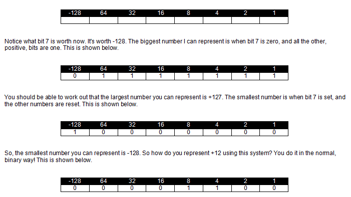

<div id="jsn-maincontent" class="span9 order1 row-fluid">
  <div id="jsn-maincontent_inner">
    <div id="jsn-centercol">
      <div id="jsn-centercol_inner">
        <div id="jsn-mainbody-content" class="jsn-hasmainbody">
          <div id="jsn-mainbody-content-inner1">
            <div id="jsn-mainbody-content-inner2">
              <div id="jsn-mainbody-content-inner3">
                <div id="jsn-mainbody-content-inner4" class="row-fluid">
                  <div id="jsn-mainbody-content-inner" class="span12 order1">
                    <div id="jsn-mainbody">
                      <div id="system-message-container"></div>

                      <div
                        class="item-page"
                        itemscope
                        itemtype="https://schema.org/Article"
                      >
                        <meta itemprop="inLanguage" content="en-GB" />

                        <div itemprop="articleBody">
                          <p></p>
                          <h1 style="text-align: center">
                            Two's complement and Sign and Magnitude
                          </h1>
                          <p class="NormalContent">
                            <strong class="NormalContentHeading"
                              >Negative binary numbers</strong
                            ><br />
                            So far, we have seen how to represent numbers using
                            binary, Hex, Octal and BCD. We have only seen how to
                            represent positive numbers. There will often be
                            times when we want to store negative numbers. For
                            example, we may need to record negative
                            temperatures, or we could be writing a 'bank
                            account' program where people's bank balances are
                            stored, and they're sometimes overdrawn, or
                            negative! There are two systems we need to know
                            about; 'sign and magnitude' and 'twos complement'.
                            They each have advantages and disadvantages.
                          </p>

                          <p class="NormalContent">
                            <strong class="NormalContentHeading"
                              >Sign and magnitude</strong
                            ><br />
                            Suppose I want to record the weather temperature in
                            degrees C in one byte. After some research, I've
                            found out that I need to represent numbers from -50
                            to +50 and I've decided to store only whole numbers.
                            Clearly, in the systems we've looked at so far, we
                            have no way of recording negative numbers. I need to
                            look again at my byte and redefine the bits in it.
                            What I have decided to do is to use bit 7 (the bit
                            on the far left), to represent the 'sign' of the
                            number - whether it is positive or negative. In my
                            system, I have decided that if bit 7 is set, then
                            the number is negative. If it is reset, then this
                            signals to me the number is positive. Bit 7 will
                            only tell me the sign - it won't have a 'magnitude'.
                            The other bits can keep the values they had before!
                            (Incidentally, the bit on the far right is 'bit
                            zero'! In one byte, you would talk about 'bit 0',
                            'bit 1', 'bit 2' and so on up to 'bit 7'). My new
                            numbering system is now shown below!
                          </p>
                          <p class="NormalContent">
                            
                          </p>
                          <p class="NormalContent">
                            This corresponds to -127. I can't represent anything
                            smaller than this. Notice that bit 7 is now set,
                            because the number is negative. This numbering
                            system has a name. We talk about a
                            <strong>sign and magnitude</strong> system, because
                            the bits not only represent the size (or
                            '<strong>magnitude</strong>') of a number but one
                            bit is also used to represent the
                            <strong>sign</strong> of the number.
                          </p>
                          <p class="NormalContent">
                            Now the sign and magnitude system is great for my
                            purpose - to record one temperature. Using this
                            system, I could now use two bytes to record the
                            temperatures on 2 successive days if I wanted to. If
                            I now wanted to work out the average of these
                            temperatures, I'd need to begin by adding the two
                            numbers together. For example, suppose I measured
                            the temperature on two successive days and found
                            them to be 23 degC and -16 degC. How could I add +23
                            to -16?
                          </p>
                          <p
                            class="NormalContent"
                            style="text-align: justify; margin-left: 30px"
                            align="center"
                          >
                            
                          </p>
                          <p class="NormalContent">
                            There is a small problem! We can't add 'symbols'
                            (the + and the -) together in the same way that we
                            can add 'amounts of something' together. It's a
                            little bit like adding +23 and -16 in denary. You
                            can add only the number parts together to get 39,
                            and then you're not sure how to 'add' the symbols,
                            and you end up with a wrong answer anyway!&nbsp;So,
                            sign and magnitude is a nice, simple system for
                            recording positive and negative numbers. If we want
                            to do sums, however, we cannot use this system
                            (easily)! We need a different one!
                          </p>
                          <p class="NormalContent">
                            <strong class="NormalContentHeading"
                              >Two's complement</strong
                            ><br />
                            This system might seem strange at first but stick
                            with it and follow the examples! I'm going to do
                            away with the system of using bit 7 to show the sign
                            of the number. I'm going to reallocate the 'worth'
                            of each bit position in the following manner:
                          </p>
                          <p class="NormalContent" align="left">
                            
                          </p>
                          <p class="NormalContent">
                            And how do you represent -12 using this system?
                            There are a number of tricks you can use to quickly
                            turn a negative number into it's two's complement
                            form. My favourite is:
                          </p>
                          <ol>
                            <li style="list-style-type: none">
                              <ol>
                                <li class="NormalContent">
                                  Write down the number as a positive binary
                                  number.
                                </li>
                                <li class="NormalContent">
                                  Starting with bit zero, copy all the bits up
                                  to and including the first set bit.
                                </li>
                                <li class="NormalContent">
                                  Invert all the others.
                                </li>
                              </ol>
                            </li>
                          </ol>
                          <p class="NormalContent">
                            For example, to convert -12 into it's two's
                            complement form:
                          </p>
                          <p class="NormalContent" align="left">
                            
                          </p>
                          <p class="QuestionStyle"></p>
                        </div>
                      </div>
                    </div>
                  </div>
                </div>
              </div>
            </div>
          </div>
        </div>
      </div>
    </div>
  </div>
</div>
